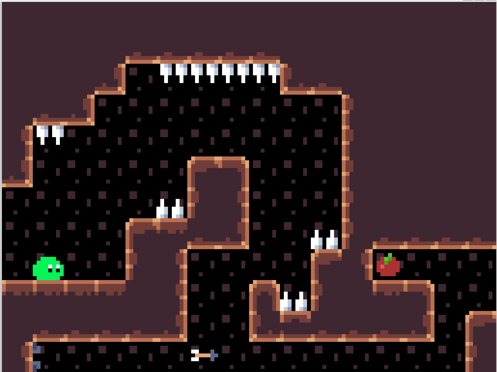
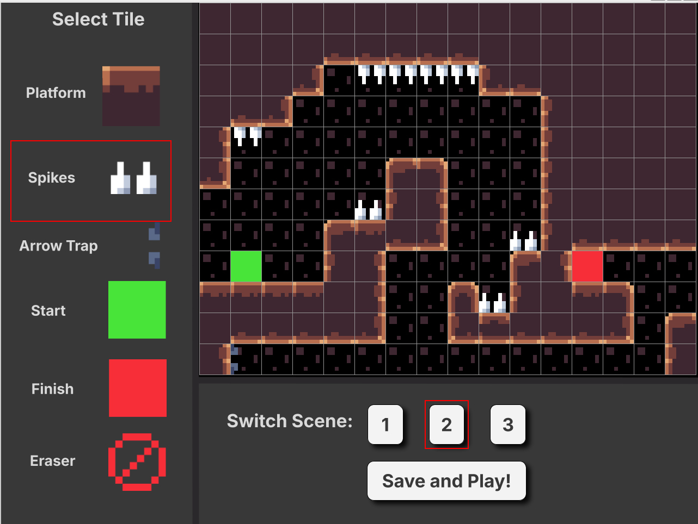
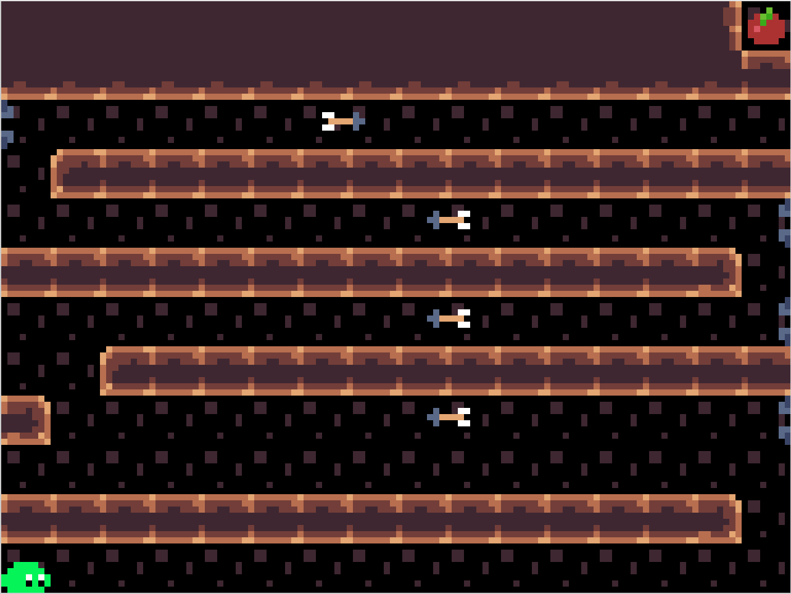

A 2D Game Engine built in Dlang



Explore detailed documentation of the BAMN Engine's functions:
With an extra eight-week window, we'd start by merging the level editor directly into the runtime—turning it into just another scene driven by the same engine loop. This wouldn't effect the use too much but it'd be really really nifty. Next, we'd refactor the tilemap module so grid dimensions are set at creation time rather than hard-coded. That change unlocks non-square tiles, oddball resolutions, and easier experimentation without touching core collision logic. We'd also like to polish the UI a little bit.
Time-wise, we'd spend roughly four weeks on the editor-as-scene integration: UI rework, live asset serialization, and hot-reloading. Two weeks would go to the flexible-grid rewrite, including updates to path-finding and physics. The remaining two weeks would deliver a minimal scene browser that lets teams create, organize, and save any number of levels in user-chosen folders, plus a small suite of integration tests to keep the new save/load path stable.
We wouldn't swap out the tech stack. D, SDL bindings, and the GameObject/Component framework all kept iteration quick and predictable, so the focus is refining the workflow rather than replacing foundations.